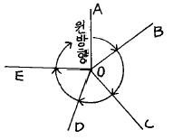
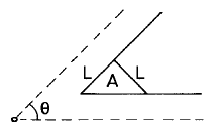
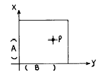
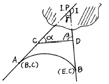
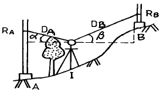
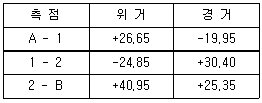

지적기사 (2003-03-16 기출문제)
1과목: 지적측량
1. 일반적으로 도근측량에서 가장 성과가 좋다고 인정되는 도선은?
- 개방도선
- 왕복도선
- 폐합도선
- 결합도선
(정답률: 알수없음)

2. 우리나라 삼각점을 구성하는 구소삼각 원점지역은 모두 몇 군데인가?
- 11개 지역
- 13개 지역
- 15개 지역
- 17개 지역
(정답률: 알수없음)
3. 100m + 4.96㎜의 정수를 표시한 권척을 사용하여 500m를 측정하였을 경우 바른 길이는?
- 500.000m
- 500.⑤0m
- 500.025m
- 500.043m
(정답률: 알수없음)
4. 전파기 또는 광파기 측량법에 의한 지적삼각측량에서 측점거리를 5회 측정한 측정치의 최대치와 최소치의 교차가 평균치의 얼마 이하이어야 측정거리를 평균치로 인정 하는가?
- 1/100,000 이하
- 1/10,000 이하
- 1/1,000 이하
- 1/100 이하
(정답률: 알수없음)
5. O점에서 수평각 5점에 대하여 측정하여 폐색하였는데 폐색차가 -10″ 가 되었다. 3번째 측정각에는 어떻게 보정 하는가?

- +6.0″
- +7.5″
- +2.5″
- +5.0″
(정답률: 알수없음)
6. 지적측량에 있어서 지적 기초측량(基礎測量)으로만 이루어진 것은?
- 지적삼각측량과 도근측량(圖根測量)
- 지적삼각측량과 스타디아측량
- 지거측량과 고저측량
- 콤파스측량과 도근측량
(정답률: 알수없음)
7. 도선법과 다각망도선법에 의한 도근점 관측에서 축척변경지역과 경계점좌표등록부 시행지역의 수평각 관측방법은?
- 방향각법
- 교회법
- 방위각법
- 배각법
(정답률: 알수없음)
8. 삼각쇄 조정계산에서 방위각 오차 q = +0.6초이고, 삼각형수가 5개일 때 γ 각이 좌측에 있다면 α 값과 γ 값은?
- α = -0.1초, γ = +0.1초
- α = +0.1초, γ = -0.1초
- α = -0.1초, γ = -0.1초
- α = +0.1초, γ = +0.1초
(정답률: 알수없음)
9. 측판측량법에 의한 세부측량을 교회법으로 시행할 경우 방향각의 교각에서 최소각과 최대각의 제한은?
- 30° 이상 120° 이하
- 30° 이상 130° 이하
- 30° 이상 140° 이하
- 30° 이상 150° 이하
(정답률: 알수없음)
10. 경위의측량법으로 도시개발사업 시행지역의 세부측량을 하는 경우에 측량결과도의 축척은 얼마로 해야 하는가?
- 1/300
- 1/500
- 1/600
- 1/1200
(정답률: 알수없음)
11. 다음 그림에서 우절면적 A는? (단, L = 5m, θ = 60° )

- 12.62m2
- 10.83m2
- 7.61m2
- 13.75m2
(정답률: 알수없음)
12. 축척이 1/1200의 지적도상의 가로 162.4㎜, 세로 41.2㎜인 사각형 토지의 실제면적은?
- 8,634.752m2
- 9,634.867m2
- 10,634.752m2
- 11,634.752m2
(정답률: 알수없음)
13. 삼각점 P의 좌표가 X = 453,4⑤.33m,Y = 195,327.00m 일때 축척 1/600 지적도의 도곽선 좌표 B의 값은 얼마인가?

- 456,600 m
- 456,100 m
- 453,600 m
- 453,400 m
(정답률: 알수없음)
14. 지적도에 등재하는 색인도의 크기는?
- 가로 5㎜, 세로 4㎜
- 가로 6㎜, 세로 5㎜
- 가로 7㎜, 세로 6㎜
- 가로 8㎜, 세로 7㎜
(정답률: 알수없음)
15. 지적측량에서 사용하는 구소삼각 원점중 가장 남쪽에 위치한 원점은?
- 소라원점
- 망산원점
- 구암원점
- 가리원점
(정답률: 알수없음)
16. 1/1000지적도에서 도곽선의 신축량이 +0.6㎜일때 면적 보정계수는?
- 0.9765
- 0.9865
- 0.9965
- 0.9695
(정답률: 알수없음)
17. 지적삼각 측량의 실시순서로 맞는 것은?
- 계획 → 답사 → 조표 → 선점 → 관측
- 계획 → 조표 → 답사 → 선점 → 관측
- 계획 → 선점 → 답사 → 조표 → 관측
- 계획 → 답사 → 선점 → 조표 → 관측
(정답률: 알수없음)
18. 경계의 제도에 대하여 틀리게 설명한 것은?
- 경계는 경계점과 경계점을 직선으로 연결한다.
- 1필지의 경계가 도곽선에 걸쳐 등록되어 있는 경우에는 반드시 다른 도면에 나머지 경계를 제도한다.
- 1필지의 경계가 도곽선에 걸쳐 등록되어 있는 경우에는 도곽선 밖의 여백에 제도할 수 있다.
- 경계점좌표등록부 시행지역의 도면에 등록하는 경계점간 거리는 검정색으로 제도한다.
(정답률: 알수없음)
19. 축척 1/600지역에서 원면적 569m2의 토지를 분할하고자 할 경우 신구면적의 오차허용면적은?
- 10.7m2
- 9.7m2
- 16.0m2
- 19.0m2
(정답률: 알수없음)
20. 지적삼각측량에 관한 내용 중 거리가 먼 것은?
- 10초독 이상의 경위의를 사용한다.
- 광파기 사용시 점간거리는 3회 이상 측정한다.
- 점간거리는 원점에 투영된 평면거리로 계산한다.
- 수평각의 관측은 3대회의 방향관측법에 의한다.
(정답률: 알수없음)
2과목: 응용측량
21. 그림과 같이 AC 및 DB 간에 곡선을 넣으려 하는데 그 교점에 갈 수가 없다. ACD = 150° , CDB = 90° , CD =100m 를 관측하여 C 점에서 곡선시점(B.C)까지의 거리를 구하려고 한다. 곡선반경을 150m 라 하면 그 거리는 얼마인가?

- 115.47m
- 125.25m
- 144.34m
- 259.81m
(정답률: 알수없음)
22. 공중사진(수직사진)의 특수 3점이 아닌 것은?
- 주점
- 등각점
- 렌즈의 초점
- 연직점
(정답률: 알수없음)
23. 지형도 및 입체사진모델을 이용, 3차원 좌표를 취득하여 경관분석, 노선선정, 비행시뮬레이션 등에 이용되는 방법은?
- 수치지형모형
- GIS
- 원격탐측
- LIS
(정답률: 알수없음)
24. 수준측량에서 전시와 후시를 등거리로 하는 것이 좋다. 그 이유를 설명한 것으로 틀린 것은?
- 지구곡률오차를 소거할 수 있다.
- 대물경의 조정오차를 없앤다.
- 시차에 의한 오차를 줄인다.
- 대기굴절오차를 소거할 수 있다.
(정답률: 알수없음)
25. 지상고도 3,000m의 비행기에서 촛점거리 15㎝의 사진기로 촬영한 수직 공중사진에 나타난 50m 교량의 크기는?
- 2.0㎜
- 2.5㎜
- 3.0㎜
- 3.5㎜
(정답률: 알수없음)
26. 완화곡선의 성질을 설명한 것으로 틀린 것은?
- 곡선의 반지름은 완화곡선의 시점에서 무한대, 종점에서 원곡선의 반지름이 된다.
- 완화곡선의 접선은 시점에서 원호에, 종점에서 직선에 접한다.
- 완화곡선에 연한 곡선반지름의 감소율은 캔트의 증가율과 다른 부호가 된다.
- 종점에 있는 캔트는 원곡선의 캔트와 같다.
(정답률: 알수없음)
27. 등고선의 측정 정도의 기준은?
- 등고선의 형성
- 등고선의 간격
- 등고선의 높이
- 등고선의 구분
(정답률: 알수없음)
28. 1/50,000 지도상에서 8㎝인 두점 사이의 실제거리는 얼마인가?
- 2㎞
- 4㎞
- 5㎞
- 10㎞
(정답률: 알수없음)
29. 지형을 표시하는 방법으로 적당하지 않은 것은?
- 모형법
- 영선법
- 등고선법
- 조감도법
(정답률: 알수없음)
30. 항공사진 표정인자 중 K′ + K＂와 동일한 운동을 하는 표정인자는?
- by
- bz
- bx
- ω
(정답률: 알수없음)
31. GPS에서 에포크(epoch)의 의미는?
- GPS위성들의 위치를 기록한 표
- GPS위성을 포함하는 대원(great circle)의 평면
- 신호를 수신하는 순간의 시간 간격
- GPS안테나와 수신기를 연결하는 케이블
(정답률: 알수없음)
32. 다음 중 원격탐사에 사용되는 전자 스펙트럼에서 가장 파장이 긴 것은?
- 자외선
- 초록색
- 빨강색
- 적외선
(정답률: 알수없음)
33. 다음 그림에서 DA = 1.144m, DB = 1.458m, α = +0° 18', β = +3° 16', RA = 2.14m, RB = 2.⑤m일 때 두점 AB의 높이차는? (단, K=100, C=0 이며 DA, DB는 협장임.)

- 10.56m
- 7.78m
- 0.60m
- 8.29m
(정답률: 알수없음)
34. 노선측량시 50m의 줄자를 검사한 결과 3.7㎝가 늘어났었다. 이 줄자를 사용하여 497.6m의 거리를 측정하였을 때 정확한 거리는?
- 497.23m
- 497.89m
- 497.92m
- 497.97m
(정답률: 알수없음)
35. 직선 터널을 뚫기 위해 트래버스측량을 실시한 결과 다음과 같은 값을 얻었다. 터널 중심선 AB의 방위각은?

- 39° 56' 37"
- 50° 03' 22"
- 219° 57' 49"
- 320° 02' 11"
(정답률: 알수없음)
36. 수평각 관측에서 측각오차 중 망원경을 정· 반으로 관측하여 소거할 수 있는 오차는?
- 시준축오차, 수평축오차, 연직축오차
- 시준축오차, 수평축오차, 분도반의 눈금오차
- 시준축오차, 시준축외심오차, 수평축오차
- 회전축편심오차, 분도반의 눈금오차, 시준축오차
(정답률: 알수없음)
37. 곡률반경이 150m 인 원곡선의 현장 60m 에 대한 중앙종거는?
- 1.5m
- 2m
- 2.5m
- 3m
(정답률: 알수없음)
38. 천구상의 태양이 적도의 남쪽에서 북쪽으로 넘어 오면서 적도와 교차하는 점으로 적경 표시의 기준이 되는 점은 ?
- 춘분점
- 라프라스점
- 추분점
- 경위도원점
(정답률: 알수없음)
39. 하천의 수위에 대한 설명 중 옳은 것은?
- 평수위는 일반적으로 평균수위와 같다.
- 3⑤일 이상을 유지하는 수위는 저수위이다.
- 지정수위는 홍수시에 매시간 관측하는 수위이다.
- 경계수위는 일정기간 수위를 합계하여 평균한 수위이다.
(정답률: 알수없음)
40. 정위 망원경으로 측정한 연직각이 -15° 23'이었다. 주망원경과 보조망원경의 간격이 9㎝이며 시준점까지의 거리는 42.40m이었다면 정확한 연직각은 얼마인가?
- -15° 15' 42"
- -15° 30' 18"
- +15° 7' 18"
- +15° 30' 42"
(정답률: 알수없음)
3과목: 토지정보체계론
41. 환지방식에 의한 도시개발사업에서의 특유한 재원확보 방법은?
- 수익자 부담금
- 개발부담금
- 체비지의 매각
- 국고보조
(정답률: 알수없음)
42. 도시인구규모가 1975년에 100000명에서 1995년에는 150000명으로 증가되었다면, 등차급수법에 의할경우 이 기간동안의 연평균 인구증가율은 몇 %인가?
- 2.5%
- 3%
- 2%
- 3.5%
(정답률: 알수없음)
43. 도시기본계획의 특징을 설명한 것이다. 틀린 것은?
- 도시기본계획은 계획이 포괄적이어야 한다.
- 도시기본계획은 정책적으로 접근해야한다.
- 도시기본계획은 장기적이어야 한다.
- 도시기본계획은 세부적인 계획이어야 한다.
(정답률: 알수없음)
44. 다음 중 도시의 성격을 나타내는 지표로 가장 거리가 먼것은?
- 산업별 인구구성비
- 유업율(有業率)
- 가로율(街路率)
- 도시인구
(정답률: 알수없음)
45. 도시 인구밀도를 정의한 다음 설명 중 옳은 것은?
- 세대수/도시행정 면적
- (남자인구 + 여자인구)/도시행정 면적
- 20세 이상의 인구수/시가지 면적
- 경제활동 인구/시가지 면적
(정답률: 알수없음)
46. 재개발 지정구역에 있어서 계획의 시행을 필요로 한 토지를 공공기관이 우선적으로 매입할 수 있는 권리를 말하는 것은?
- 수용권
- 감보권
- 선매
- 유보지
(정답률: 알수없음)
47. 로마에서 도시행정 및 시민생활의 중심지로 이용되고, 시장으로 사용했던 장소는?
- 아고라(Agora)
- 포럼(Forum)
- 아크로폴리스(Acropolis)
- 콜로세움(Coloseum)
(정답률: 알수없음)
48. 근린주구 계획에서 핵심적 시설이 되는 것은?
- 시청
- 공회당
- 초등학교
- 도서관
(정답률: 알수없음)
49. 도시공간에서 도심의 한계를 설정하는 방법 중 성격이 다른 하나는?
- 인구분포를 이용하는 방법
- 공용패턴을 기준으로 하는 방법
- 보행자수를 기준으로 하는 방법
- 중심업무지수법
(정답률: 알수없음)
50. 인구이동의 가장 큰 이유는 경제적 이유때문이라고 하는 데 인구이동이 지역간의 실질소득의 격차 때문에 발생하는 것이 아니라 미래의 지역간 기대소득의 차이 때문에 일어난다고 주장한 사람은?
- 프리드만(John Friedmann)
- 토다로(M.P. Todaro)
- 베버(A. Weber)
- 호텔링(Hotelling)
(정답률: 알수없음)
51. 지역. 지구제의 목적에 가장 합치되는 것은?
- 적정한 도시 환경을 조성한다.
- 건축물 용도를 자유로이 한다.
- 인구 도시 집중을 쉽게 한다.
- 건축물 밀도를 자유화 한다.
(정답률: 알수없음)
52. 주거· 상업· 공업· 유통물류· 관광 및 휴양기능 등을 집중적으로 개발· 정비할 필요에 따라 현행 국토의계획및이용에관한법률에 의해 지정하는 용도지구는?
- 아파트지구
- 시설보호지구
- 보존지구
- 개발진흥지구
(정답률: 알수없음)
53. 다음 중 도시의 물리적인 구성요소와 거리가 먼 것은?
- 밀도
- 배치
- 동선
- 등록
(정답률: 알수없음)
54. 중세 도시의 특징이 아닌 것은?
- 중세 초기에는 보루형 도시로서 시가지가 무질서 하였다.
- 계획도시는 대다수가 직교형으로 설계하여 중심에는 시장과 광장을 배치하였다.
- 특징적 가로망 형태는 환상방사형이었다.
- 중세도시는 영주의 소재지나 사원의 소재지에서 형성되었다.
(정답률: 알수없음)
55. 도시개발사업을 위한 조합설립인가 내용 중에서 맞는 것은?
- 토지소유자 5인 이상이 조합설립 인가를 받아야 한다
- 토지면적의 3분의 2 이상에 해당하는 토지소유자의 동의를 받아야 한다
- 구역안의 토지소유자 총수의 3분의 2 이상의 동의를 얻어야 한다
- 인가 받은 사항을 변경하고자 하는 때에는 지정권자로부터 변경인가를 다시 받을 필요가 없다
(정답률: 알수없음)
56. 케빈 린치(Kevin Lynch)의 도시 이미지 구성 요소에 들지 않는 것은?
- 결절점(node)
- 도로(path)
- 지구(district)
- 패턴(pattern)
(정답률: 알수없음)
57. 가도시화 현상(pseudo-urbanization)에 관한 설명으로서 가장 적절하지 못한 것은?
- 농촌경제의 파탄에 의한 이농현상이 주된 원인이다.
- 도시의 고용능력한계를 초과하여 농촌인구가 과도하게 집중하는 현상을 의미한다.
- 도시지역의 흡인작용에 의한 농촌 노동인구의 도시집중에서 비롯되었다.
- 주로 개발도상국에서 볼 수 있는 현상이다.
(정답률: 알수없음)
58. 다음중 성장거점이론과 관계 없는 것은?
- 선도산업(Leading Industry)
- 파급효과(Spread Effect)
- 포섭의 원리(nested principle)
- 집적의 경제(Agglomeration Economies)
(정답률: 알수없음)
59. 장래 인구를 예측할 수 있는 방법에 대한 설명으로 틀린것은?
- 과거추세연장에 의하는 방법
- 비교유추에 의한 방법
- 집단생잔법에 의한 방법
- 4단계 추정에 의한 방법
(정답률: 알수없음)
60. 주민이 도시관리계획 입안을 제안할 수 있는 사항으로 볼 수 없는 것은?
- 지구단위계획의 수립에 관한 사항
- 국토개발 및 재개발사업에 관한 계획
- 지구단위계획구역의 지정에 관한 사항
- 기반시설의 설치· 정비에 관한 사항
(정답률: 알수없음)
4과목: 지적학
61. 초본 식물인 딸기를 재배하는 토지의 지목은?
- 전
- 과수원
- 임야
- 잡종지
(정답률: 알수없음)
62. 양입지(量入地)에 관한 설명 중 옳지 않은 것은?
- 본토지에 병합하는 다른 지목의 토지를 말한다.
- 전, 답, 대도 양입지가 될 수 있다.
- 염전, 광천지는 양입지가 될 수 없다.
- 토지의 면적이 330m2이상인 경우는 양입지가 될 수 없다.
(정답률: 알수없음)
63. 지적업무의 정의를 기술한 것중 가장 옳은 것은?
- 국가공권력에 의하여 토지의 일정한 사항을 공정(公定)하여 지적공부에 등록 공시하는 업무이다.
- 지방자치권에 의하여 토지의 일정한 사항을 공정(公定)하여 지적공부에 공시하는 업무이다.
- 토지의 권리관계를 등록 공시 결정하는 업무이다.
- 지방자치권에 의하여 토지표시사항을 결정하는 업무이다.
(정답률: 알수없음)
64. 다음 지적학의 연구방법으로서 토지현상의 비중을 경제성에 두고 연구하는 접근방법은?
- 역사적 접근방법
- 경제적 접근방법
- 체제론적 접근방법
- 비교론적 접근방법
(정답률: 60%)
65. 다음 중 토지의 이동신청을 할 자격이 없는 자는?
- 판결에 의한 물권 취득자
- 경매에 의한 물권 취득자
- 공유수면 매립권자
- 미등록지의 점유자
(정답률: 알수없음)
66. 지적재조사사업의 목적과 거리가 먼 것은?
- 지적불부합지의 해소
- 능률적인 지적관리체제 개선
- 경계복원능력의 향상
- 토지거래질서의 확립
(정답률: 알수없음)
67. 권리공시제도의 하나로서 지적제도는 토지의 일정한 표상을 공시하고 있다. 그 공시장부는?
- 등기부
- 토지과세대장
- 건물대장
- 지적공부
(정답률: 알수없음)
68. 지적과 관련된 사항으로 연결이 옳지 않는 것은?
- 등록사항-형식주의
- 등록방법-심사주의
- 등록공부-비밀주의
- 등록주체-국정주의
(정답률: 알수없음)
69. 지번의 결번(缺番)이 되는 원인이 아닌 것은?
- 토지조사 당시 지번 누락으로 인한 결번
- 토지의 등록전환으로 인한 결번
- 토지의 경계정정으로 인한 결번
- 토지의 합병으로 인한 결번
(정답률: 알수없음)
70. 토지 등록의 요소로서 적당하지 않은 것은?
- 위치 및 면적
- 토지의 세일링 포인트(Selling Point)
- 토지의 가격
- 소유자 및 기타 권리 관계
(정답률: 알수없음)
71. 조선시대 양안(量案)은 오늘날 어떤 장부와 같은가?
- 토지대장
- 토지과세대장
- 측량원도
- 측량계산부
(정답률: 알수없음)
72. 지적국정주의의 규정이라 볼 수 없는 것은?
- 부동산 물권변동에 대하여 등기를 하지 않으면 효력이 없다.
- 신청의무에 대한 불이행자에게 부과는 벌칙이다.
- 토지소유자의 신청을 그 원인으로 하여 국가가 결정을 한다.
- 소유자의 신청이 없을 때에는 국가가 직권으로 조사 또는 측량하여 결정한다.
(정답률: 알수없음)
73. 지압(地押)조사에 대한 설명으로 다음 중 옳은 것은?
- 무신고이동지를 발견하기 위하여 실시하는 토지조사이다.
- 신고, 신청에 의하여 실시하는 토지조사이다.
- 임야를 직권정리하는 것을 말한다.
- 지압조사는 직권으로 정리하고 토지소유자 또는 이해 관계인에게 통지하는 것을 말한다.
(정답률: 알수없음)
74. 토지조사 사업에서 사정한 토지소유자의 소유권 취득은?
- 원시취득
- 소유권 이전
- 소유권 보존
- 소유권 공증
(정답률: 알수없음)
75. 토지기록부인 지적의 구성에 해당하지 않는 것은?
- 토지현황조사
- 기록과 도화
- 관리와 운영
- 경영
(정답률: 알수없음)
76. 토지를 등록전환 하였을 때의 지적공부정리 방법으로 가장 옳은 것은?
- 토지대장의 등록사항을 말소한다.
- 임야대장 및 임야도의 등록사항을 말소한다.
- 임야도의 등록사항은 그대로 둔다.
- 토지대장에 등록만 할 뿐 임야대장의 말소는 하지 아니 한다.
(정답률: 알수없음)
77. 토지의 물권 공시제도로서의 지적과 등기가 각각 분담하는 관계로서 옳지 않은 것은?
- 토지 등록단위 결정 - 지적
- 토지위치 결정 - 지적
- 제한물권 설정 - 등기
- 신규등록지의 소유자 조사 - 등기
(정답률: 알수없음)
78. 토지조사때 사정한 경계에 불복하여 고등 토지조사 위원회에서 재결한결과 사정한 경계가 변경되는 경우 그 변경의 효력이 발생되는 시기는?
- 재결일
- 재결서 통지일
- 재결서 접수일
- 사정일에 소급
(정답률: 알수없음)
79. 토지표시중 지번의 설정사유와 관계가 없는 것은?
- 물권 객체의 구분
- 등록공시단위
- 토지위치구분
- 물권적 가치추정
(정답률: 알수없음)
80. 토지조사 및 임야조사사업시에 사정 사항으로서 소유자를 사정하였다. 물권객체로서의 소유자 사정의 본질이라 할수 있는 것은?
- 기존 소유권의 확인
- 소유권의 이전
- 기존 소유권의 승계
- 기존 소유권의 공증
(정답률: 알수없음)
5과목: 지적관계법규
81. 축척변경 위원회에 관한 설명으로 잘못된 것은?
- 위원은 해당지역내 토지소유자만으로 구성한다.
- 위원은 5인 이상 10인 이내로 구성한다.
- 위원장은 위원중에서 소관청이 지명한다.
- 위원회 의결은 출석위원 과반수 찬성으로 결정한다.
(정답률: 알수없음)
82. 다음 중 토지이동 신청· 신고 기간이 잘못 연결되어 있는 것은?
- 등록전환 → 60일 이내
- 지목변경 → 60일 이내
- 도시개발사업 등의 신고 → 60일 이내
- 합병 → 60일 이내
(정답률: 알수없음)
83. 신규등록신청서류에 해당되지 않는 것은?
- 법원의 확정판결서 사본
- 소유권을 증명할 수 있는 서류의 사본
- 등기부등본
- 법원의 확정판결서 정본
(정답률: 알수없음)
84. 지적법의 목적으로 틀리는 것은?
- 지적측량에 관한 사항규정
- 지적공부에 등록하는 절차규정
- 효율적인 토지관리에 기여
- 토지의 개발에 관한 사항규정
(정답률: 알수없음)
85. 등기부의 기재사항에 관한 다음 기술중 틀린 것은?
- 저당권의 변경등기는 을(乙)구란에 기재되어 있다.
- 소유권에 관계되는 환매권의 등기는 갑(甲)구란에 기재되어 있다.
- 지상권에 관계되는 등기명의인의 표시변경 등기는 갑(甲)구란에 기재되어 있다.
- 소유권 등기의 말소등기는 갑(甲)구란에 기재되어 있다.
(정답률: 알수없음)
86. 환지 예정지의 지정으로 인하여 종전 토지상의 임차권, 지역권자가 계약을 해지 또는 권리를 포기하였을 경우 손실보상금은 누구에게 청구해야 하는가?
- 시· 도지사
- 사업시행자
- 시장, 군수
- 건설교통부 장관
(정답률: 알수없음)
87. 국토의계획및이용에관한법률상 상업지역의 용도세분에 해당하지 않는 것은?
- 전용상업지역
- 중심상업지역
- 일반상업지역
- 근린상업지역
(정답률: 알수없음)
88. 다음 중 중앙지적위원회의 심의· 의결사항이 아닌 것은?
- 지적측량기술의 연구· 개발
- 지적측량 적부심사청구사항의 심의· 의결
- 지적기술자 및 지적기능자의 양성방안
- 지적기술자 및 지적기능자의 징계
(정답률: 알수없음)
89. 토지대장에 등록할 해당 축척지역별 결정면적으로 맞는 것은?
- 500분의 1 → 0.99m2
- 600분의 1 → 0.9m2
- 1200분의 1 → 99.9m2
- 3000분의 1 → 999.9m2
(정답률: 알수없음)
90. 다음 중 관할등기소란 무엇을 말하는가?
- 매도인의 소재지를 관할하는 지방법원, 동지원 또는 등기소
- 부동산의 소재지를 관할하는 지방법원, 동지원 또는 등기소
- 소유자의 소재지를 관할하는 지방법원, 동지원 또는 등기소
- 상급법원의 장이 위임하는 등기소
(정답률: 알수없음)
91. 건축법상의 용어에 관한 내용이 맞는 것은?
- 용도변경은 건축은 아니다.
- 건축이란 신축· 증축· 개축· 재축· 대수선을 말한다.
- 부속건축물만 있는 대지에 새로이 주된 건축물을 축조하는 경우 증축이 된다.
- 기존건축물이 없는 대지에 새로이 건축물을 축조하는 경우만 신축으로 본다.
(정답률: 알수없음)
92. 공유수면 매립준공에 의하여 신규등록하는 경우 대장에 등록하여야 할 소유권 변동일자는?
- 신규등록 신청 일자
- 지적공부 정리 일자
- 공유수면 매립준공 일자
- 지적공부 정리결의서 작성 일자
(정답률: 알수없음)
93. 다음 중 물권적 청구권이라고 볼 수 없는 것은?
- 소유물 반환청구권
- 점유물 방해예방청구권
- 전세물 방해제거청구권
- 부동산 매수인의 등기청구권
(정답률: 알수없음)
94. 도시관리계획결정의 고시일로부터 몇년이 되는 날까지 규정에 의한 지형도면의 고시가 없는 경우에 그 도시관리계획결정의 효력을 상실하게 되는가?
- 1년
- 2년
- 3년
- 5년
(정답률: 알수없음)
95. 시장, 군수가 도시관리계획을 입안하고자 할 때 기초조사 사항이 아닌 것은?
- 인구변동의 상황 및 그 추세
- 토지이용상황 및 지가 변동상황
- 기반시설 및 주거수준의 현황과 전망
- 재해의 발생현황 및 추이
(정답률: 알수없음)
96. 지적도 및 임야도에 등록할 사항이 아닌 것은?
- 토지의 소재와 지번
- 지목
- 경계
- 면적
(정답률: 알수없음)
97. 축척변경사업시 청산금의 납부고지 또는 수령통지는 언제 하는가?
- 청산금조서 작성한 날로부터 15일이내
- 청산금조서 작성한 날로부터 20일이내
- 청산금 결정공고한 날로부터 15일이내
- 청산금 결정공고한 날로부터 20일이내
(정답률: 알수없음)
98. 민법상 물권의 종류가 아닌 것은?
- 청구권
- 지상권
- 질권
- 유치권
(정답률: 알수없음)
99. 지적기술자에 대한 징계요구를 할 수 없는 자는?
- 서울특별시장
- 대행법인의 대표자
- 소관청
- 측량신청인
(정답률: 알수없음)
100. 도시개발사업을 환지방식으로 시행하고자 하는 경우 개발계획을 수립하는 때 시행지역안의 토지소유자 동의는 최소 얼마가 필요한가?
- 토지면적의 1/3이상에 해당하는 토지소유자와 그 지역의 토지소유자 총수의 1/2이상
- 토지면적의 2/3이상에 해당하는 토지소유자와 그 지역의 토지소유자 총수의 1/2이상
- 토지면적의 1/2이상에 해당하는 토지소유자와 그 지역의 토지소유자 총수의 2/3이상
- 토지면적의 1/2이상에 해당하는 토지소유자와 그 지역의 토지소유자 총수의 1/3이상
(정답률: 알수없음)